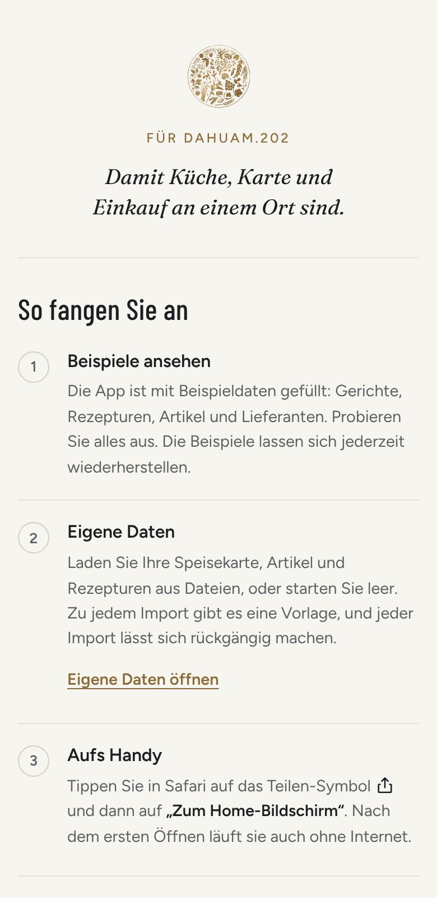
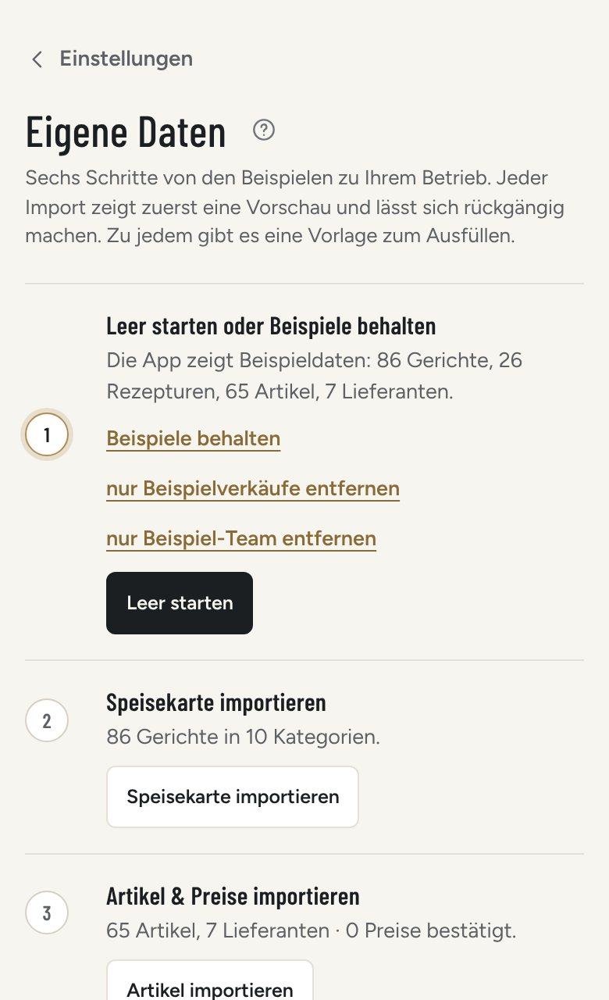
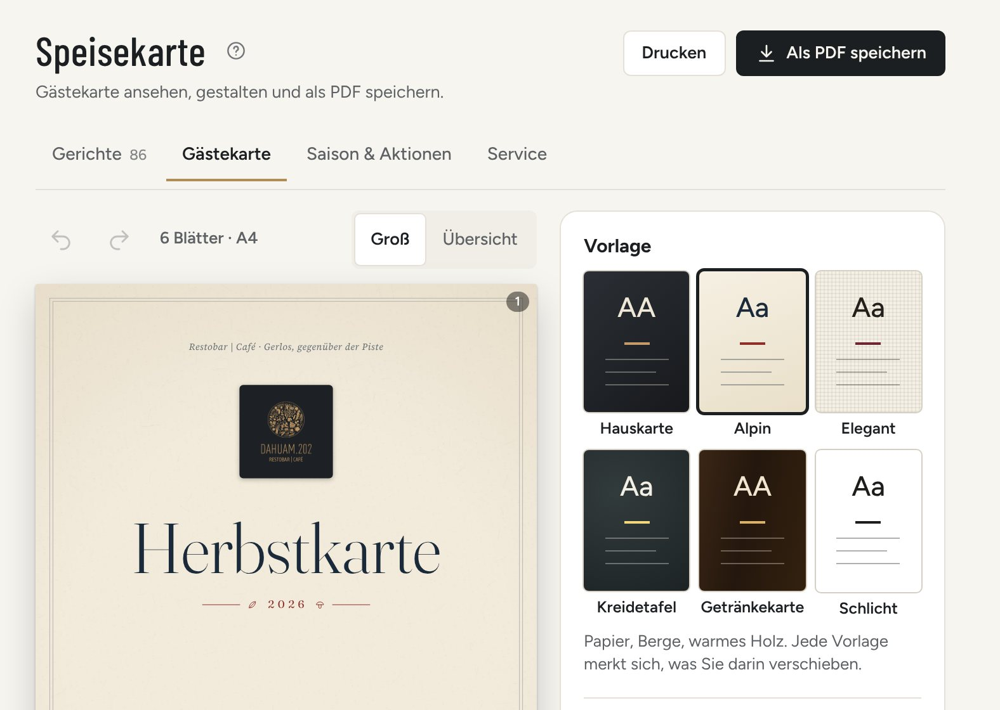
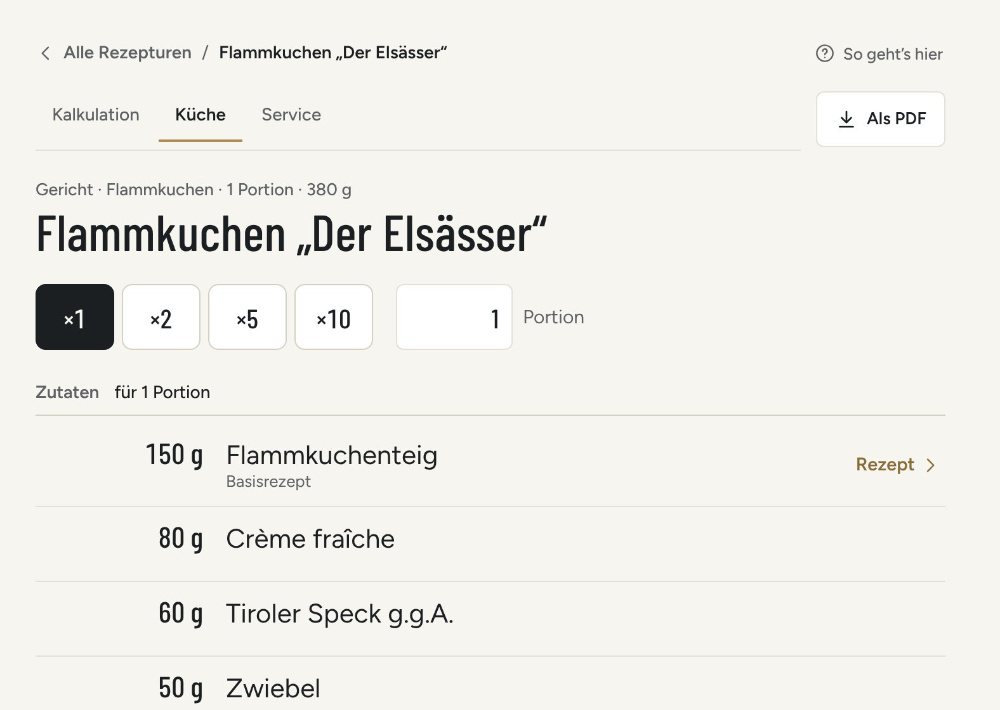
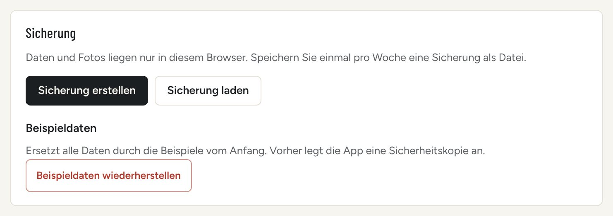

Die Küchen-App hält an einem Ort zusammen, was in Küche und Einkauf jeden Tag anfällt: Speisekarte und Gästekarte, Rezepturen mit Wareneinsatz, Lager und Bestellungen, die Prep-Liste, Checklisten mit Eigenkontrolle, Dienstplan und Auswertung. Sie läuft im Browser auf Handy, Tablet und Computer und funktioniert nach dem ersten Öffnen auch ohne Internet.
1Das erste Öffnen
Beim ersten Öffnen auf einem Gerät erscheint die Willkommensseite: oben eine Widmung, darunter drei Schritte.
Beispiele ansehen. Die App ist mit Beispieldaten gefüllt. Alles lässt sich ausprobieren; die Beispiele kann man jederzeit wiederherstellen.
Eigene Daten. Speisekarte, Artikel und Rezepturen aus Dateien laden oder leer starten (Abschnitt 3).
Aufs Handy. iPhone und iPad: in Safari auf das Teilen-Symbol, dann „Zum Home-Bildschirm“. Android: in Chrome auf das Menü ⋮, dann „App installieren“ oder „Zum Startbildschirm hinzufügen“. Bietet Chrome die Installation direkt an, steht auf der Willkommensseite der Knopf „App installieren“.
„Los geht’s“ führt zu „Heute“. „Kurzer Rundgang“ zeigt die täglichen Seiten in fünf Schritten. Die Willkommensseite lässt sich später wieder öffnen: Einstellungen › Hilfe › Willkommen.

Die Willkommensseite am Handy
2Die Bereiche
Heute
Das Tagesblatt: was heute zu bestellen ist, welche Lieferung kommt, welche Checkliste offen ist.
Vorbereitung
Die Prep-Liste für heute und die nächsten Tage, aus der Prognose gerechnet. Ein Tipp hakt ab.
Checklisten
Aufsperren, Zusperren und Putzen zum Abhaken, dazu die Eigenkontrolle.
Speisekarte
Alle Gerichte mit Preis und Wareneinsatz, die Gästekarte, Saison und Aktionen.
Rezepte
Rezepturen für Gerichte und Basisrezepte: was hineinkommt und was eine Portion kostet.
Ware
Bestand, Bestellen, Lieferanten, Preise, Inventur und Buchungen.
Team & Zahlen
Dienstplan und Auswertung der Verkäufe aus der Kasse.
Einstellungen
Betrieb und Steuer, Sicherung, Eigene Daten und Hilfe.
Am Handy stehen unten Heute, Prep, Checklisten und Rezepte; Speisekarte, Ware, Team & Zahlen und Einstellungen liegen unter „Mehr“.
3Eigene Daten
Einstellungen › Eigene Daten führt in sechs Schritten von den Beispielen zu Ihrem Betrieb: zuerst leer starten oder die Beispiele behalten, dann Speisekarte, Artikel & Preise, Rezepturen, Team und Kasse importieren.
Vorlagen: Zu jedem Import gibt es eine Vorlage zum Ausfüllen, als CSV und als Excel.
Vorschau: Jeder Import zeigt zuerst, was neu, geändert oder fehlerhaft ist. Geändert wird erst, wenn Sie übernehmen.
Rückgängig: Nach jedem Import gibt es „Rückgängig“. Dann ist alles wie vorher.
Bis dahin steht unten in der Seitenleiste „Beispieldaten · eigene Daten“; der Link führt ebenfalls hierher.

Eigene Daten: sechs Schritte
4Im Alltag
Gästekarte als PDF
Speisekarte › Gästekarte. Eine Vorlage antippen (Hauskarte, Alpin, Elegant, Kreidetafel, Getränkekarte, Schlicht): die Blätter entstehen aus Ihrer Speisekarte. Bausteine antippen und am Griff verschieben; unter „Effekte“ Hintergrund, Farbe und Ornament wählen. Die Karte zeigt, was am gewählten Tag gilt. „Als PDF speichern“ erstellt die Datei zum Drucken oder Verschicken. Beim Tag gibt es auch das Allergen-Blatt als PDF.

Rechts Vorlage und Effekte, oben rechts „Als PDF speichern“
Rezept für die Küche
Rezepte, ein Gericht öffnen, oben „Küche“ wählen. Die Mengen stehen groß und ohne Preise, für ×1, ×2, ×5, ×10 oder eine eigene Portionszahl. Ein Basisrezept öffnet sich mit genau der Menge, die gebraucht wird. „Als PDF“ speichert das Rezept zum Ausdrucken.

Rezept in der Ansicht „Küche“
Bestellung
Ware › Bestellen. Bei jedem Lieferanten, der heute annimmt, steht die Uhrzeit des Annahmeschlusses. „Bestellung vorbereiten“ legt einen Entwurf an; die App schlägt vor, was unter dem Mindestbestand liegt. Je nach Lieferant öffnet „E-Mail öffnen“, „WhatsApp öffnen“ oder „Webshop öffnen“ den fertigen Text. Abschicken müssen Sie selbst, danach „Als gesendet markieren“. Kommt die Ware: Bestellung öffnen, „Wareneingang“, prüfen, „Einbuchen“.
Eigenkontrolle: die Monatsmappe
Checklisten › Verlauf, unten den Monat wählen, „Monatsmappe als PDF“. Die Mappe enthält Temperaturen, Wareneingang, Frittieröl, Reinigungsplan und Checklisten eines Monats, dazu alle Abweichungen auf einem eigenen Blatt.
5Daten und Sicherheit
Die Daten bleiben auf dem Gerät. Sie liegen nur in diesem Browser. Die App schickt nichts weg, solange unter Einstellungen keine Cloud verbunden ist.
Jedes Gerät hat eigene Daten. Was am Handy eingetragen wird, steht nicht von selbst am Tablet.
Sicherung: „Sicherung erstellen“ unter Einstellungen speichert alles als Datei. Am besten einmal pro Woche. Sobald eigene Daten drin sind, erinnert „Heute“ daran, wenn es noch keine Sicherung gibt oder die letzte sieben Tage alt ist.
Wiederherstellen: „Sicherung laden“ ersetzt alle Daten durch die Datei; vorher legt die App eine Sicherheitskopie an. So kommen die Daten auch auf ein anderes Gerät.
Frühere Stände: Die App hebt selbst die letzten sieben Arbeitstage und je einen Stand der vier Wochen davor auf (Einstellungen › Speicher & frühere Stände).
Website-Daten im Browser nicht löschen: damit wären auch die Daten der App weg. Am sichersten liegt die App auf dem Home-Bildschirm.

Einstellungen › Sicherung
6Hilfe in der App
„Was ist das?“ einschalten (am Computer unten in der Seitenleiste, am Handy das ?-Symbol oben) und auf etwas tippen. Die App erklärt es und ändert dabei nichts.
Das ? neben dem Seitentitel zeigt „So geht’s hier“: drei, vier Sätze zur Seite.
Suche (Lupe, am Computer Strg K): ein Gericht, einen Artikel oder eine Seite finden.
Rundgang, Willkommen und diese Anleitung stehen unter Einstellungen › Hilfe.
Die Bilder zeigen die Beispieldaten der App. Stand: App-Version __VERSION__.